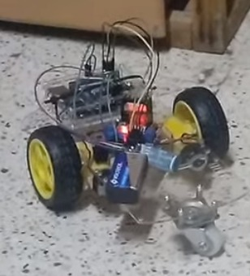
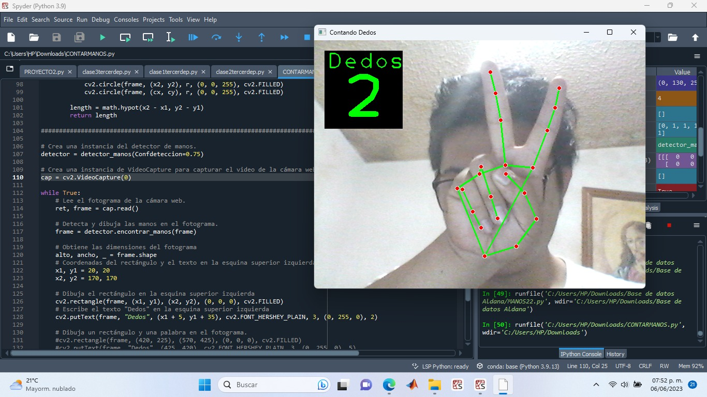
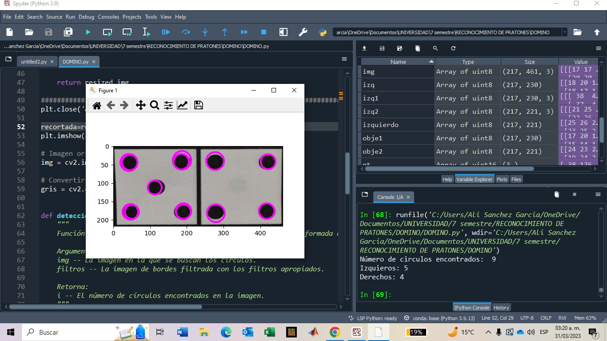

Voice controlled mobile cart in python and run on arduino
Developing a voice-controlled mobile cart involves creating a system that can interpret voice commands and control the movement of a cart using an Arduino board.
Detection and manual tracking using python and mediapipe
Hand recognition using Python's Mediapipe involves leveraging the Mediapipe library to detect and track human hands in real-time through webcam or video input. This technology utilizes machine learning and computer vision techniques to identify key landmarks on the hand, such as finger tips, palm center, and knuckles.
Domino game using python and tile recognition
Creating a domino game using Python and tile recognition involves combining computer vision and game logic to simulate a digital version of the classic dominoes game.
